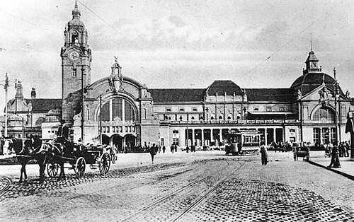
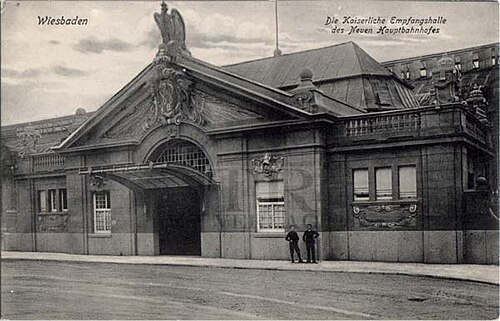
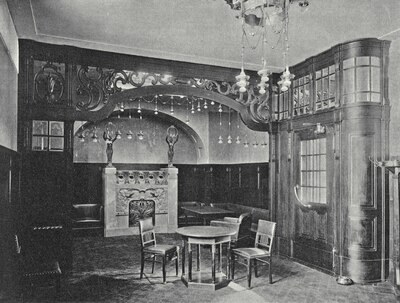
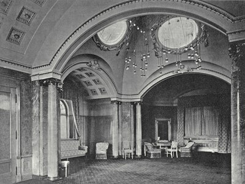
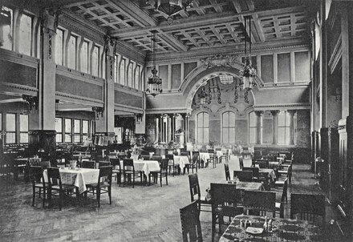

1906 als Weltkurstadt-Bahnhof eröffnet, mit Kaiserempfang und exklusivem Erstklasse-Salon. 118 Jahre später: zweitgrösster Bahnhof Hessens.
--
Abfahrt
Ziel
Linie
Gleis
09:28 +7'
Frankfurt (Main) Hbf via Frankfurt-Höchst
RE 9
1
09:35
Koblenz Hbf via Rüdesheim, Bingen (Rhein)
RB 10
2
09:41 +3'
Niedernhausen via Wiesbaden-Ost, Idstein
RB 21
3
09:48
Rödermark-Ober-Roden via Frankfurt Hbf, Darmstadt
S 1
5
09:53
Hanau Hbf via Frankfurt Flughafen, Frankfurt Hbf
S 8
6
10:08
Hanau Hbf via Frankfurt Flughafen, Frankfurt Hbf
S 9
7
10:15
Frankfurt (Main) Hbf via Frankfurt-Höchst
RE 9
1
10:22
Köln Hbf via Frankfurt (Main) Hbf, Koblenz
ICE
4
10:30
Rödermark-Ober-Roden via Frankfurt Hbf, Darmstadt
S 1
5
10:35 +4'
Koblenz Hbf via Rüdesheim, Bingen (Rhein)
RB 10
2
10:41
Niedernhausen via Wiesbaden-Ost, Idstein
RB 21
3
10:48
Hanau Hbf via Frankfurt Flughafen, Frankfurt Hbf
S 8
6
10:53
München Hbf via Frankfurt (Main) Hbf, Nürnberg
ICE
4
11:08
Hanau Hbf via Frankfurt Flughafen, Frankfurt Hbf
S 9
7
11:12
Frankfurt (Main) Hbf via Frankfurt-Höchst
RE 9
1
11:20
Rödermark-Ober-Roden via Frankfurt Hbf, Darmstadt
S 1
5
11:28 +2'
Hamburg Hbf via Frankfurt (Main) Hbf, Kassel
ICE
4
11:35
Koblenz Hbf via Rüdesheim, Bingen (Rhein)
RB 10
2
11:41
Niedernhausen via Wiesbaden-Ost, Idstein
RB 21
3
11:48
Hanau Hbf via Frankfurt Flughafen, Frankfurt Hbf
S 8
6
11:53
Berlin Hbf via Frankfurt (Main) Hbf, Erfurt
ICE
4
12:08
Hanau Hbf via Frankfurt Flughafen, Frankfurt Hbf
S 9
7
12:15 +6'
Frankfurt (Main) Hbf via Frankfurt-Höchst
RE 9
1
12:22
Rödermark-Ober-Roden via Frankfurt Hbf, Darmstadt
S 1
5
Simulierte Daten
1904
Neubau
Architekt Fritz Klingholz beginnt den Bau. Die aufwändige neobarocke Ausstattung stammt zu weiten Teilen vom Mainzer Bildhauer Franz Vlasdeck. Ein Durchgangsbahnhof wurde erwogen, aber verworfen — er wäre fast drei Kilometer weiter vom Stadtzentrum entfernt gewesen.
1906
Eröffnung
Der neue Hauptbahnhof öffnet und ersetzt drei ältere Bahnhöfe. Einzigartig: ein eigener Kaiserbahnsteig und ein exklusiver Wartesaal allein für die 1. Klasse.

Wiesbaden Hauptbahnhof zur Eröffnung 1906
1923
Bombenanschlag
Während der alliierten Rheinlandbesetzung wird ein Bombenanschlag auf die Schalterhalle verübt. Zwei Reisende werden verletzt, einer schwer.
2002
ICE-Anbindung
Nach langen Debatten über Tunnelvarianten unter der Stadt wird eine ebenerdige Anbindung an die Schnellfahrstrecke Köln–Rhein/Main realisiert. Das Wiesbadener Kreuz gilt als die wirtschaftlichste Lösung.

Gleisanlage nach der ICE-Anbindung
2004
Die ersten Bahnhöfe
Wiesbaden erhält seinen ersten Eisenbahnanschluss mit dem Taunusbahnhof für die Strecke nach Frankfurt. In den folgenden Jahrzehnten entstehen der Rheinbahnhof (1857) und der Ludwigsbahnhof (1879) — drei separate Kopfbahnhöfe nebeneinander.
2021
Sechs Monate Stillstand
Der Schaden an der Salzbachtalbrücke legt den Bahnhof vom 18. Juni bis 21. Dezember fast vollständig lahm. Die Brücke wird am 6. November 2021 gesprengt — und planmässig am 22. Dezember der Betrieb wieder aufgenommen.
Heute
Verkehrsknoten
Der Wiesbaden Hauptbahnhof steht heute unter Denkmalschutz. Täglich nutzen ihn rund 27 000 Reisende — als Ausgangspunkt für ICE-Verbindungen, Regionalbahnen und die S-Bahn ins Rhein-Main-Gebiet. Die neobarocke Fassade von 1906 ist vollständig erhalten.
Wiesbaden war die bevorzugte Sommerresidenz des Kaisers — der Bahnhof sein persönliches Empfangsportal.
Kaiser Wilhelm II. reiste jeden Mai nach Wiesbaden, das als seine bevorzugte Kurstadt galt. Der Bahnhof wurde bewusst auf diesen Gast ausgerichtet: Ein eigenes Empfangsgebäude an der Westseite der Bahnsteighalle, baulich vom Hauptgebäude getrennt, empfing den Kaiser.
Der Kaiserbahnsteig war für Hofzüge reserviert und für die Öffentlichkeit vollständig gesperrt. Sogar ein eigener Erstklasse-Wartesaal war eingerichtet — in keinem anderen deutschen Bahnhof gab es einen separaten Saal nur für die erste Klasse.

Salon für den Kaiser

Der Kaiser reist an

Wartesaal 2. Klasse
Das Kaisergebäude wurde im Zweiten Weltkrieg zerstört. Der historische Zugang zum Kaiserbahnsteig in der Bahnsteighalle ist bis heute erhalten.
Alter Kaisereingang — Westflügel, historischer Hofzugang
Busbahnhof ZOB — direkt vor dem Haupteingang
Altstadt — 10 min zu Fuß, Marktkirche & Schlossplatz
Kurpark — 15 min zu Fuß, grösster Kurpark Deutschlands